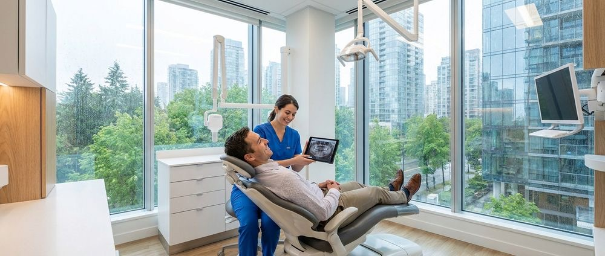

Smart Innovations Shaping the Future of Modern Dental Clinics
Clinical Technology · Oral Health · Patient Experience · Preventative Care

The healthcare sector is experiencing a massive shift in patient expectations. Today, individuals walking into a healthcare facility demand more than just routine procedures. They expect a seamless, highly efficient experience that prioritizes their comfort and respects their time. Many practices face significant operational vulnerabilities when they rely on outdated administrative and clinical systems. Patient retention drops sharply when individuals feel their provider is not keeping pace with modern standards of care. We recognize that adopting modern dental technology is not just an operational upgrade. It is a fundamental requirement for maintaining community trust and ensuring long-term practice stability.
Anxiety remains one of the largest barriers preventing individuals from seeking necessary preventative and restorative care. For decades, the traditional clinical environment has inadvertently fostered stress and apprehension among patients of all ages. When a facility fails to address these deeply rooted fears, it risks alienating the very community it aims to serve. We see firsthand how integrating thoughtful design and empathetic communication strategies directly combats this hesitation. By prioritizing a welcoming atmosphere, we systematically dismantle the anxiety that often surrounds healthcare visits. This approach allows us to build stronger relationships with our patients based on mutual respect and understanding.
Additionally, the fragmentation of specialized care often forces patients to visit multiple different offices for a single comprehensive treatment plan. This disjointed approach creates logistical headaches, increases overall costs, and leads to inconsistent care quality. We understand that an advanced dental clinic must provide a centralized hub for all preventative, restorative, and cosmetic needs. By consolidating these essential services under one roof, we eliminate the friction that typically discourages patients from completing their recommended treatments. Our unified approach ensures that every individual receives consistent, high quality attention from a team they already know and trust.
Precision Diagnostics and Digital Imaging
The foundation of any successful treatment plan begins with a highly accurate diagnosis. In the past, practitioners relied heavily on two-dimensional imaging techniques. These older methods often left significant blind spots in complex anatomical structures, leading to delayed interventions. We utilize advanced three-dimensional imaging techniques to capture highly detailed views of the entire oral cavity. This incredible depth of visibility allows us to identify hidden infections, structural anomalies, and bone density issues long before they become symptomatic. Precision diagnostics represent a cornerstone of modern dental technology, ensuring that our interventions are both timely and highly effective.
Beyond simply identifying existing problems, high-resolution digital scans significantly improve the planning phase for intricate procedures. When we prepare for complex restorative work or precise implant placements, having an exact digital replica of the patient anatomy ensures unparalleled accuracy. We can virtually map out the entire procedure step by step on a computer screen. This meticulous planning reduces the margin for error and minimizes the time patients spend sitting in the chair. Efficiency in the treatment room directly translates to a more comfortable experience for the patient.
The immediate availability of digital images also enhances our ability to communicate effectively with our patients. Instead of trying to explain a complex diagnosis using abstract medical terms, we display the digital scans directly on a high-definition monitor. We guide our patients through the visual evidence of their current oral health status. This transparency builds immediate trust and helps patients feel fully involved in their own healthcare decisions. When patients understand the exact nature of their condition, they feel more confident in the proposed solutions.
Transitioning away from traditional film-based x-rays also aligns with our broader commitment to patient safety and environmental responsibility. Digital radiography requires significantly less radiation exposure compared to older methods, protecting our patients during routine exams. Additionally, it eliminates the need for harsh chemical developers that can harm the local ecosystem when disposed of improperly. We believe that adopting these dental care innovations protects both our community and the environment we all share.
Creating an Anxiety-Free Clinical Environment
The physical environment of a healthcare facility plays an enormous role in shaping the overall patient experience. Stark, highly clinical waiting rooms often trigger subconscious stress responses in individuals before they even reach the treatment chair. We deliberately design our spaces to feel warm, inviting, and inherently calming. From the soft lighting choices to the comfortable seating arrangements, every detail is carefully curated to put our visitors at ease the moment they walk through the door. A welcoming reception area sets a positive tone for the entire appointment.
Noise reduction is another critical component of our modern clinical design strategy. The high-pitched sounds of traditional equipment have historically been a major source of anxiety for many individuals. We invest heavily in modern, quiet-running handpieces and install acoustic dampening materials throughout our facility. By minimizing these auditory triggers, we create a serene atmosphere that allows patients to relax during their appointments. A quieter environment reduces sensory overload, making the visit significantly more pleasant.
We also implement advanced pain management techniques that prioritize patient comfort above all else. The fear of physical discomfort often delays necessary interventions, leading to more severe complications down the road. We utilize computer-controlled delivery systems for local anesthesia, which significantly reduces the sensation of the initial injection. Our team ensures that every individual feels completely numb and completely comfortable before any procedure begins. Managing pain effectively is a non-negotiable standard in our practice.
Empathy and clear communication serve as the final pillars of our anxiety-reduction strategy. We train our staff to read non-verbal cues and pace treatments according to the comfort level of the individual in the chair. We actively encourage patients to ask questions, express their concerns, and request breaks whenever needed. An advanced dental clinic operates on the principle that emotional well-being is just as important as physical health. By validating patient concerns, we foster a supportive environment where fear is replaced by confidence.
Comprehensive Care Consolidation
Navigating the healthcare system can be an exhausting endeavor for individuals with busy professional and family schedules. When patients are referred out to multiple specialists for a single restorative project, the likelihood of treatment abandonment increases dramatically. We address this vulnerability by housing a wide array of specialized services under one unified roof. This consolidation ensures that our patients receive consistent, high quality care without the logistical nightmare of coordinating between different offices and separate billing departments.
Preventative care remains the bedrock of our practice, but we seamlessly integrate advanced restorative and cosmetic procedures into our daily service offerings. Whether an individual needs a routine cleaning, a complex root canal, or a full smile restoration, we manage the entire process internally. This continuity of care means that our clinical team possesses a complete, unbroken historical record of the patient oral health journey. Having access to this comprehensive history allows us to make better, more informed clinical decisions over time.
Collaboration among our clinical team members is significantly enhanced when all procedures occur in the exact same facility. We can easily consult with one another on complex cases, ensuring that every angle is considered before finalizing a treatment plan. This multidisciplinary approach leads to superior clinical outcomes and a much smoother experience for the patient. We view this internal synergy as a prime example of effective dental care innovations driving better health results.
Time is a precious commodity for the families and professionals we serve throughout our community. By offering flexible scheduling options, including evenings and weekends, we accommodate the demanding lifestyles of our patients. Consolidating treatments into fewer, more efficient appointments minimizes disruptions to our patients daily routines. We respect their time by delivering comprehensive solutions promptly and professionally, ensuring they can return to their lives with minimal downtime.
Empowering Patients Through Digital Workflows
The days of passive patient participation are long gone in the modern healthcare environment. Today, individuals want to actively engage in their healthcare journeys and understand every step of the process. We facilitate this engagement by integrating comprehensive digital workflows into our daily operations. From secure digital intake forms to easily accessible online scheduling platforms, we remove the administrative friction that often frustrates new and returning visitors. This streamlined approach sets a highly positive tone before the patient even arrives at our facility.
Intraoral scanners have completely replaced the uncomfortable, messy impression materials of the past. We use small, wand-like cameras to capture highly accurate three-dimensional models of the teeth and gums in a matter of minutes. These digital impressions are not only far more comfortable for the patient, but they also provide an incredibly precise foundation for creating crowns, bridges, and aligners. This is a perfect example of how modern dental technology directly improves the physical patient experience while increasing clinical accuracy.
Once we capture these digital models, we use specialized software to simulate potential treatment outcomes. We can show a patient exactly how their smile will look after a cosmetic procedure or an orthodontic intervention. This visual forecasting empowers patients to make highly informed decisions about their financial investments in their oral health. Seeing the projected results builds excitement and confidence in the proposed treatment plan, aligning our clinical goals with patient expectations.
Financial transparency is seamlessly integrated into our entirely digital workflow. We provide clear, itemized digital estimates for all proposed treatments before any work begins. Our administrative team works diligently to explain insurance benefits and flexible payment options, ensuring there are no surprise costs at the end of an appointment. We believe that an advanced dental clinic must be just as transparent with its billing practices as it is with its clinical diagnoses.
Sustainable and Eco-Conscious Operations
Environmental responsibility is a core value shared by many members of our local community. Healthcare facilities historically generate a significant amount of waste, but we are actively working to change that narrative within our own practice. We implement sustainable practices across every aspect of our daily operations. From reducing single-use plastics to utilizing biodegradable barriers where clinically appropriate, we strive to minimize our ecological footprint while maintaining strict hygiene standards.
The transition to a completely paperless office is a major step in our ongoing sustainability efforts. All patient records, consent forms, and billing documents are stored securely in encrypted digital formats. This initiative saves countless trees and significantly reduces the physical storage space required within our facility. It also allows our administrative team to locate and update patient files with maximum efficiency, ensuring that your data is always accurate and instantly accessible to our providers.
We also carefully source the materials we use for our restorative and cosmetic procedures. We prioritize biocompatible materials that are safe for the patient and manufactured using environmentally responsible methods. By choosing suppliers who share our strict commitment to sustainability, we ensure that our supply chain reflects our overarching corporate values. Dental care innovations extend far beyond clinical techniques; they encompass the ethical sourcing of operational materials and equipment.
Energy efficiency is another primary area where we focus our eco-conscious efforts. We utilize LED lighting and highly energy efficient appliances throughout our practice. Our advanced sterilization equipment is specifically designed to conserve water and electricity without compromising the rigorous hygiene standards required in a clinical setting. We are proud to operate a facility that protects the health of our patients while also respecting the health of our planet.
Navigating the complexities of oral health requires a trusted partner who prioritizes your comfort, respects your time, and utilizes the most effective tools available today. We are deeply committed to providing comprehensive care that addresses your specific needs while eliminating the stress traditionally associated with clinical visits. Our team continuously refines our internal processes to ensure you receive the highest standard of care in a welcoming, modern environment. We believe that everyone deserves a healthy smile achieved through transparent, empathetic, and highly precise methods.
If you are ready to experience a different approach to oral health, we invite you to connect with our team. We offer flexible scheduling to accommodate your busy lifestyle and provide clear guidance on all available treatment options. Reach out to us directly at appts@4thavenuedental.ca to arrange your personalized evaluation. Let us help you achieve optimal oral health through a partnership built on trust, advanced techniques, and a genuine commitment to your overall well-being.
Ready to book a visit?
1905 West 4th Avenue, Kitsilano. Book online or call the clinic.